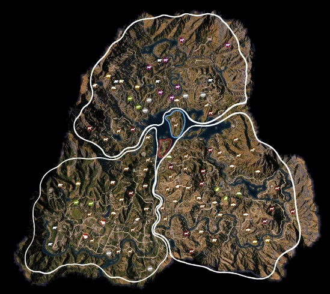

Far Cry 5
Far Cry 5 — компьютерная игра в жанре шутера от первого лица и action-adventure, разработанная студией Ubisoft Montreal и изданная компанией Ubisoft. Является пятой основной игрой из одноимённой серии игр. Действие игры происходит в округе Хоуп, штат Монтана, и повествует о противостоянии помощника шерифа и культа Судного дня под названием «Врата Эдема». Far Cry 5 была выпущена в 2018 году на платформах Windows, PlayStation 4 и Xbox One.
Подобно своим предшественникам, игра представляет собой шутер от первого лица в жанре action-adventure и имеет открытый мир, по которому игроки могут свободно путешествовать. Отличительной чертой является редактор персонажей, при помощи чего можно настроить внешний вид протагониста, пол и цвет кожи. Доступно множество гаджетов и оружия для борьбы с врагами: арсенал включает в себя дробовики, пистолеты, штурмовые и снайперские винтовки, пулемёты, гранатомёты, луки, ножи, взрывчатку (динамит, C4), гранаты, мины, коктейли молотова, лопаты, кувалды и бейсбольные биты[6]. Персонажи пользуются различными транспортными средствами, включая вертолёты, автомобили, тракторы, квадроциклы, лодки и самолёты. Кроме того, в игре будет система вербовки, в которой можно рекрутировать местных жителей, чтобы сражаться вместе с ними против врагов, для чего, впрочем, предварительно понадобится заработать уважение будущих союзников и получить среди них хорошую репутацию. Имеется возможность приручать диких животных благодаря системе, подобной Far Cry Primal. Приручённые звери могут помочь игроку в бою. Была представлена механика рыболовства. Всю кампанию можно проходить в одиночку или с партнёром через совместный многопользовательский режим игры. В игре также представлен редактор карт, функции которого были расширены.
